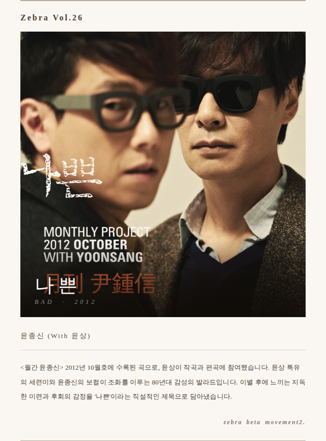

예전부터 국내가요를 이야기할 때 빼놓지 않고 회자되는 용어가 있습니다. '마이너뽕'.
'마이너뽕'은 서양식 마이너 코드 진행 위에 한국인이 직관적으로 친숙함과 애환을 느끼는 멜로디를 얹은 형태로, 80년대의 최루성 발라드로부터 단조 멜로디에 빠른 댄스 비트를 결합하여 음향적으로는 신나지만 감성적으로는 슬픔을 유발하는 90년대 댄스음악까지 국내 대중음악 전반에 걸쳐 자주 나타나는 통속적인 음악 스타일과 정서를 말합니다.
'익숙한 마이너 코드진행 위의 애잔한 멜로디 그리고 그 안에 비빔밥처럼 버무려진 '한'스런 정서'. 작곡가들은 이 특유의 클리셰가 히트곡을 만드는 비결이라는 것을 알고 있었고 때로는 의도적으로 피하고 싶어 했지만 자동으로 스며드는 '마이너뽕'에 번번이 퇴짜 맞기 일쑤에 '뽕삘을 좀 빼라'는 소리를 듣기 십상이었습니다. 아마도 국적을 바꾸기 전에는 불가능한 일이지 싶습니다.

윤종신의 '나쁜(With윤상)은 '마이너뽕' 신파의 폼나는 절정입니다. 가수 자신이 곡 소개에서 밝혔듯이 이 곡은 전형적인 80년대 스타일의 마이너 발라드입니다. 8비트 피아노로 시작하는 초반부의 익숙한 정서는 윤종신의 직설적인 가사와 윤상의 설득력 있는 멜로디로 시작부터 우리의 감성을 충분히 그리고 마구잡이로 흔들어 버리고, 중반부로 이어지는 균형 있는 편곡과 적절한 스트링의 배치는 격정적이지만 절제된 감정선을 이어 갑니다. 그리고 후반부…
잠시 멈출 듯, 스네어 드럼을 신호탄으로 터지는 조정치의 기타 솔로와 화려하지만 단정한 스트링의 조화는 곡의 흐름을 드라마틱한 절정으로 이끌고, 국내 어느 곡에서도 느낄 수 없었던 가장 통속적이면서 동시에 가장 고급스러운 엑스타시로 우리를 안내합니다.
5분이 넘는 러닝타임 문제로 축소되었을 것으로 추정되는 후반부를 페이드아웃 처리하지 않고 1분만 더 이어갔으면 아마도 심장마비가 왔을지도 모릅니다.
곡의 드라마틱한 감정을 오롯이 쫓아가려면 가능하면 좋은 매체에서 볼륨을 높여 듣기를 권장합니다.
나쁜그 홀가분했던 몇 달이 다야
최선이라 믿었던 이별
그 효과는 상처만 깊어진 그럴듯한 싸구려 진통제
못되게 굴었던 내 싫증에
이미 짐이 돼 버린 널 향했던
구차하고 비겁한 나의 이별 만들어가기
절대 용서하지 마
때늦은 후회로 널 찾아도 무릎 꿇어도
사랑했단 이유로 니마음 돌리려 해도
아플 때면 이미 늦은 거라던
그 어떤 병처럼 다 받아들일게
이제와 지금이 널 가장 사랑하는 순간 일지라도
결국 언젠간 잊을 거라도
결국 현명한 어른이 돼도
내겐 아팠던 지금 이 순간 들은
눈가 주름 속 이끼처럼 남아
무뎌져 웃는 어른이 싫어
무뎌져 흐뭇한 추억 싫어
대가를 치를게
진심의 너를 귀찮아했던 나의 최후를
절대로 날 용서하지 마
때늦은 후회로 널 찾아도
무릎 꿇어도 사랑했단 이유로
니마음 돌리려 해도
아플 때면 이미 늦은 거라던
그 어떤 병처럼 다 받아들일게
이제와 지금이 널 가장 사랑하는 순간 일지라도
미안해
작사 윤종신 · 작곡 윤상 · 편곡 윤상
Produced by 윤상 · Strings arranged & conducted by 박인영 · Drum 신석철
Bass 한가람 · Guitar 조정치 · Rhodes piano 유희열 · Keyboard 윤상

윤종신이 말하는 10월호 이야기
1990년 내가 데뷔했을 때 윤상은 이미 22살의 나이로 이미 우리 가요계를 한번 뒤집고 업그레이드시켰다.
난 동료이기 전에 그의 팬이었고 그는 김현철, 정석원 등과 함께 나의 노래를 초라하게 느낄 정도로 세련되고 앞서 나가는 음악을 했다. 나는 그를 동경했고 그와 작업을 하고 싶었다. 91년 여의도 MBC 7층 라디오국 화장실에서.. "윤상 씨 곡 좀 받을 수 있을까요?" 난 조심스럽게 물었고 윤상은 씩 한번 웃고 그러자고 했다. 그 이후 또 한 번 연락 없이 서로 바빠지고 못 보고..
90년대는 가수와 작곡가 제작자가 무리 지어 팀처럼 작업을 하던 시절이었다. 그리고 각 무리들은 서로의 자존심을 유지하며 어떻게 보면 폐쇄적 작업 시스템이 만들어졌다. 예를 들면 내가 속해 있던 대영AV(015B 정석원, NEXT 신해철, 전람회 김동률 등), 동아기획(김현철, 봄여름가을겨울 등등), 라인기획(김창환 김형석 천성일) 그리고 윤상 손무현 하광훈선배 들이 포진된 그룹들..
시간이 흘러 나도 어느새 나만의 작업으로 내 앨범을 꾸려나갔지만 여전히 윤상에 대한 동경은 변함이 없었다. 그의 곡과 편곡에 내 목소리를 얻고 싶은 바람으로 2000년 초반에 한번 부탁을 했으나 잘 이루어지지 않았고 그 후 친한 형으로 술잔을 기울이다 부탁했지만 곡이 잘 안 나온다며 번번이 거절.. 그러다 2012년 드디어 월간윤종신 10월호에 부탁한 지 21년 만에 이 사람의 곡을 받아내고야 만다.
'나쁜'형 윤상.. 곡설명이 무슨 필요가 있겠나.. 우리 또래가 80년대 향유했던 마이너발라드의 느낌을 2012년 사운드로 2012년식 직설화법의 가사로 풀어내었다. 충분한 간주 충분한 후주가 있다.. 요즘 음악에선 볼 수 없는.. 그리고 노래 후반의 드라마틱한 박인영의 스트링 편곡과 조정치 기타의 어우러짐은 요즘 노래곡에서 보기 힘든 연주자들의 기량을 맘껏 들을 수 있게 최대한 페이드아웃을 길게 늘여 놓았다.
'나쁜'은 윤상과 윤종신이 만들어 낸 2012년식 '신파'다.
나쁜 (With 윤상)
윤종신